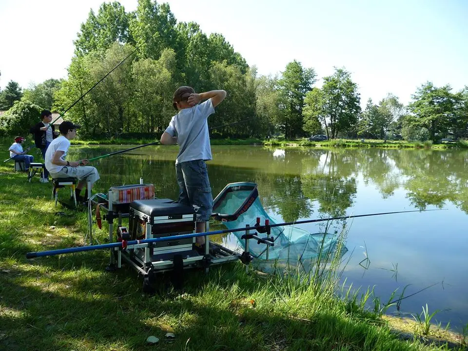

- Le domaine des Saveurs, aussi appelé ferme des Planons, est classée au patrimoine naturel de l'Unesco.
- Des concours de pêche ont régulièrement lieu, moments appréciés des habitants et des voyageurs.
Le parc contient de nombreux lieux que nous vous conseillons d'aller voir:
 |
|
| Source de l'image | |
|  | |
| Source de l'image | |
| Pour plus d'activités ou d'informations, nous vous invitons à vous rendre sur les sites de la ville de Saint Cyr sur Menthon et du Domaine des Planons que voici: | |
| Site de la ville | Site du Domaine des Planons |